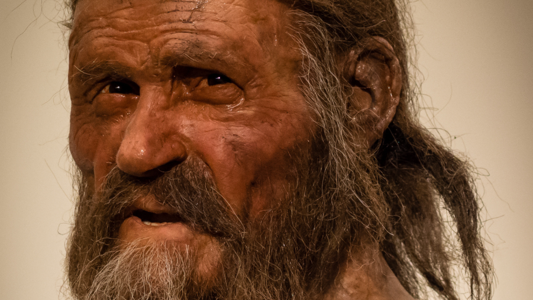
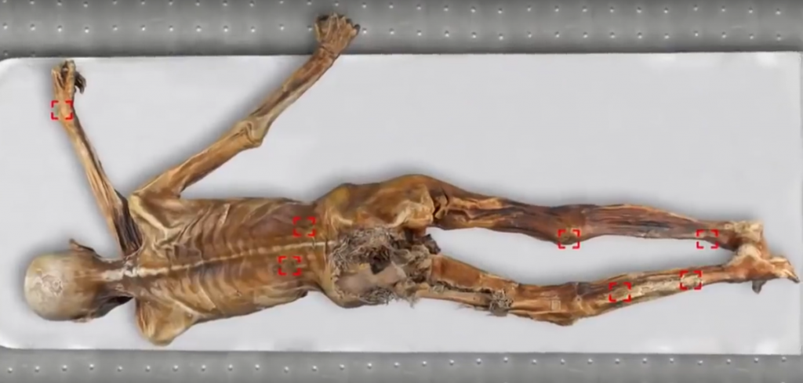
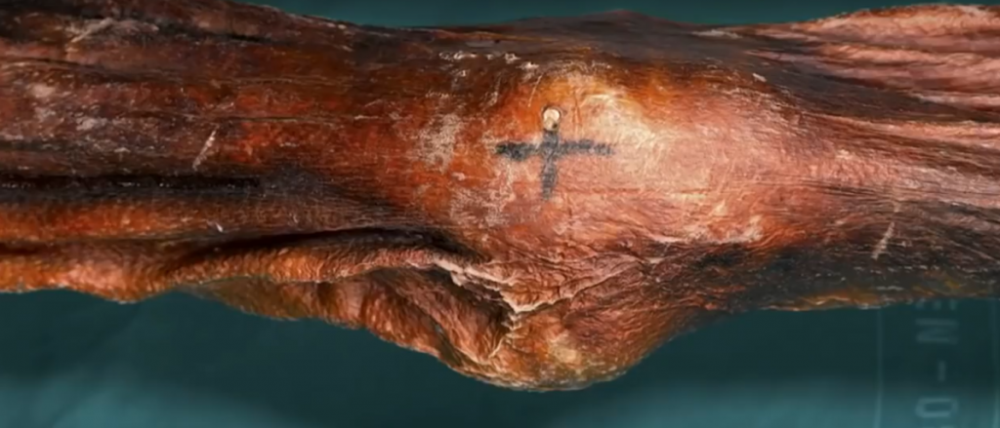

Stone-age Mummy Debunks the Origin of Acupuncture
‘Ötzi the Iceman’ is a mummy found in the Ötztal Alps in 1992, on the border of Austria and Italy.
The body was so perfectly preserved, the hikers who found him thought that the cadaver may be a relatively recent death.
It wasn’t until the body’s belongings were uncovered – such as a copper headed ax, a flint head knife, a bow and a quiver of arrows; was when a group of archaeologists were called.
Carbon dating revealed that the mummy had been frozen in time for 5300 years.
A stone arrowhead was discovered lodged in his back – which explains his death. But the fact that his belongings were left behind, leads researchers to believe he had been killed in battle. This was confirmed with further DNA analysis on his clothes and arrowheads revealing blood from four different individuals.
An autopsy of his stomach showed the remains of a partially digested meal of grains and meat from an ibex, a species of a high-altitude wild goat.
Further research on Ötzi’s remains revealed he had a blood type of ‘O’. Analysis of his hair showed a high level of copper and arsenic, suggesting that he may have forged his copperhead axe himself. And a full sequencing of his DNA reported that he had brown eyes, was lactose intolerant and shares ancestory with Corsicans and Sardinians.
Science paints a picture of a 5300 year old man
20 years after his discovery, the South Terole Museum (where Ötzi now lives) commissioned a reconstruction of him, based on a MRI scan of his facial features and skeleton.

A sufferer of chronic pain
At the approximate age of 45, Ötzi was plagued with ill health.
X-rays of the mummy’s body showed evidence of arthritis in the hip joints, ankles, knees, and lower back
Forensic analysis of Ötzi’s intestines revealed he was suffering from a stomach parasite called whipworm, which causes severe abdominal pain.
The oldest evidence for acupuncture
Upon inspection of the mummy’s skin, researchers discovered dozens of small tattoos made by cuts to the skin with charcoal rubbed into the wound.
Because the markings were placed in unusual areas of the body and were non-decorative, it was suspected that these tattoos were not for religious reasons.


After further investigation, it was revealed that the tattooed markings corresponded with traditional acupuncture ‘pressure points’, used to treat back pain and abdominal problems – which Ötzi suffered from.
Nine of Ötzi ‘s tattoos are pressure points on the Bladder meridian line… a meridian commonly used for treating back pain.
Interestingly, one of the iceman’s tattoos is located near the ankle, on the point BL 60, which is a commonly used ‘master point’ for back pain.
Another five tattoos matched with pressure-points located on the Spleen, Gallbladder and Liver meridians – points that are traditionally used to treat stomach disorders.
Since needles had not been invented in that era, it is likely that the tattooed markings were indicators for Ötzi (or a shaman) to apply an acupressure regime to relieve his pain.
The ancient Chinese were certainly the ones to perfect the art of acupuncture/acupressure. But this finding certainly raises the question that this natural healing art may have originated in the Eurasian continent at least 2000 years before it was first recorded in China.
Acupressure is a highly effective means for chronic pain and common disease
Acupressure is the older sister of acupuncture – where firm finger pressure is used instead of needles.
If a simple man from the stone-age is able to apply acupressure on himself to relieve chronic pain… you can too!
But you don’t need to get tattoo markings all over your body to remember your acupressure routine.
Natural Synergy has an app giving simple instruction for over 400 therapeutic pressure-points. The full system has an alphabetical index for fast relief for over 150 different pains and ailments.
Such as:
– Strong pain relief (back pain, knee pain, neck pain, toothache etc)
– Migraines
– Depression & Anxiety
– High blood pressure
– Menopause
– Fertility issues for women & men
– Psoriasis, Eczema, Acne
– Addictions (nicotine, alcohol, opioids, cocaine, junk food)
– Impotence
– Chronic fatigue syndrome
– Hypothyroidism
– Urinary problems
– And much more…
Unlike the limitations of technology from the stone age, modern doctors discovered that a combination of two acu-therapies at once yields greater results – which is why electro-acupunture is so popular in Chinese hospitals.
Natural Synergy however, has formulated a non-invasive version that you can easily apply yourself for fast relief in as little as three minutes a day.